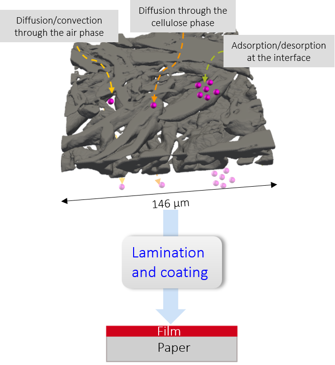
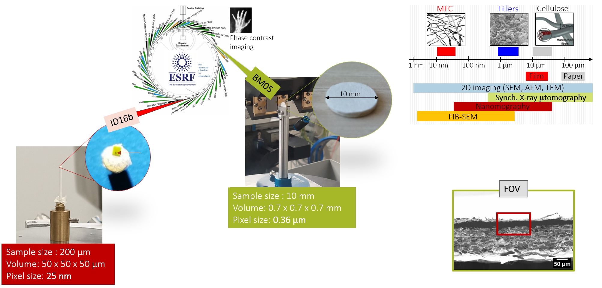
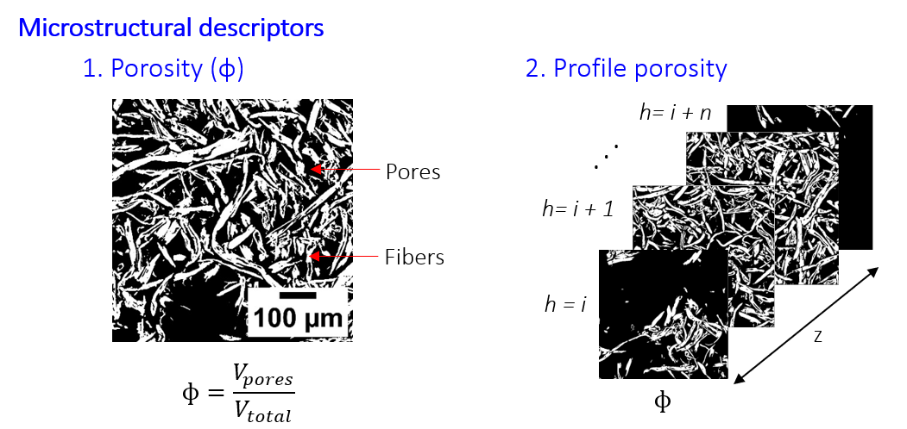
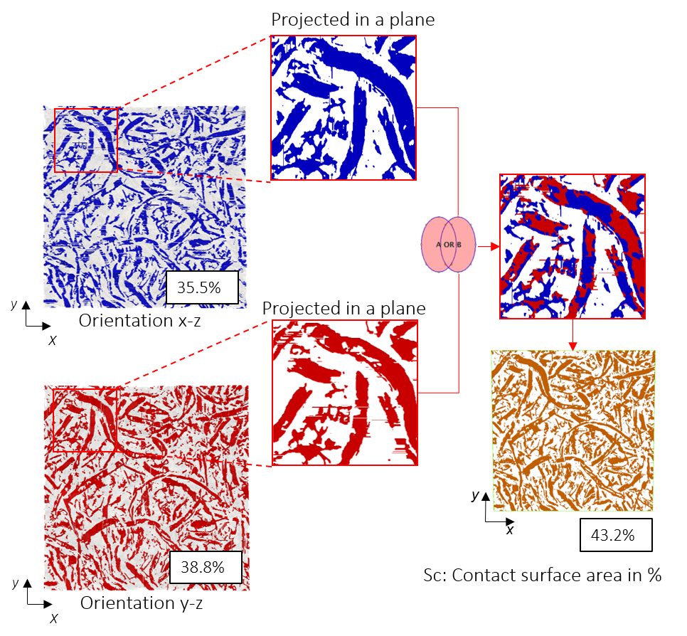
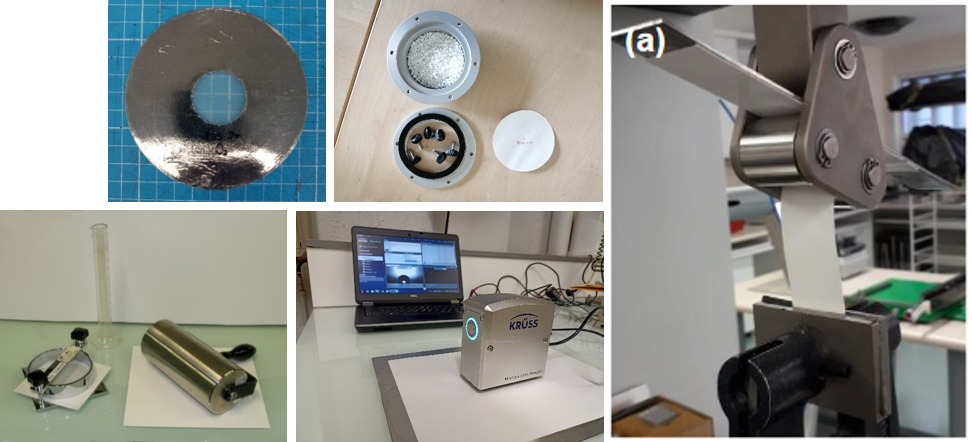
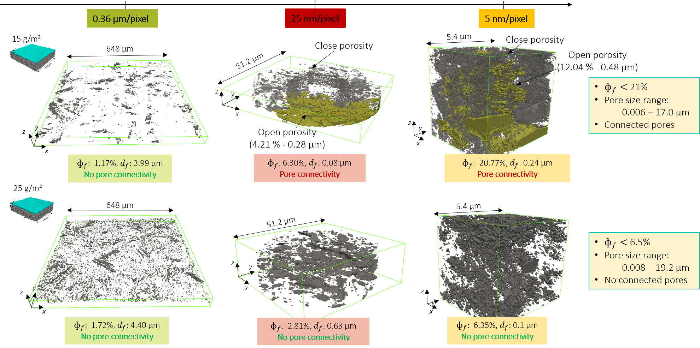

Background
The transition toward more sustainable food packaging requires alternatives to conventional fossil-based plastic barriers. Paper and paperboard are renewable materials, but their porous structure limits their ability to provide effective barriers against gases and water.
Microfibrillated cellulose (MFC) films can provide improved barrier properties while maintaining a predominantly bio-based packaging structure. However, their performance depends strongly on how the MFC film interacts with the underlying paper and on the resulting three-dimensional microstructure.
Research question: How does the 3D microstructure of a wet-laminated MFC film control adhesion and barrier properties?

Objectives
The PhD aimed to establish a quantitative link between the structure of MFC-coated paper and its functional properties.
- Characterize the three-dimensional structure of the paper–MFC interface across multiple length scales.
- Quantify microstructural descriptors such as porosity, connectivity and interfacial contact.
- Evaluate adhesion and barrier properties of the resulting multilayer materials.
- Relate microstructural features to macroscopic performance.
Multiscale characterization
A combination of imaging techniques was used to characterize the material from the micrometre to the nanometre scale.
- Synchrotron micro-computed tomography to reconstruct the 3D structure of the paper–MFC system and quantify porosity, connectivity and interfacial contact.
- Synchrotron nano-computed tomography to investigate the MFC network at the nanoscale.
- FIB-SEM to observe the local microstructure of the MFC film and its interface with the paper substrate.
- Image analysis using segmentation and quantitative descriptors to transform 3D images into measurable structural parameters.

From images to quantitative descriptors
Three-dimensional images were converted into quantitative descriptors capable of describing the structure of the MFC layer and its interface with the paper.


These descriptors provided a quantitative way to compare materials with different MFC formulations, coating conditions and paper substrates.
From structure to properties
The structural descriptors were compared with functional measurements including adhesion and barrier properties.
- Oxygen transmission rate (OTR) to evaluate gas barrier performance.
- Water vapour transmission rate (WVTR) to assess water vapour barrier properties.
- Peel testing to quantify adhesion between the MFC layer and the paper substrate.
- Surface characterization including roughness, contact angle and surface energy.

Key findings
The 3D characterization revealed important differences in the structure and interfacial organization of the MFC layers depending on the MFC formulation and coating conditions.
The analysis showed that barrier and adhesion performance cannot be described only by the amount of MFC deposited. Instead, the resulting three-dimensional organization of the MFC network and its contact with the paper substrate play an important role.
In particular, the study highlighted the importance of porosity, pore connectivity and interfacial contact as structural descriptors for understanding the performance of wet-laminated MFC films.

Scientific contribution
This work established a multiscale characterization strategy to move from qualitative observation of paper-based multilayers toward quantitative, image-derived descriptions of their three-dimensional structure.
By connecting these descriptors with adhesion and barrier measurements, the study provides a framework for understanding how processing and material architecture influence the performance of bio-based packaging materials.
Perspectives
The approach developed during the PhD can be extended to other hierarchical porous materials and multilayer systems where functional properties depend on three-dimensional architecture.
More broadly, the work illustrates how multiscale imaging, image analysis and material-property measurements can be combined to establish quantitative structure–property relationships and provide recomendations for the design and optimization of the material.